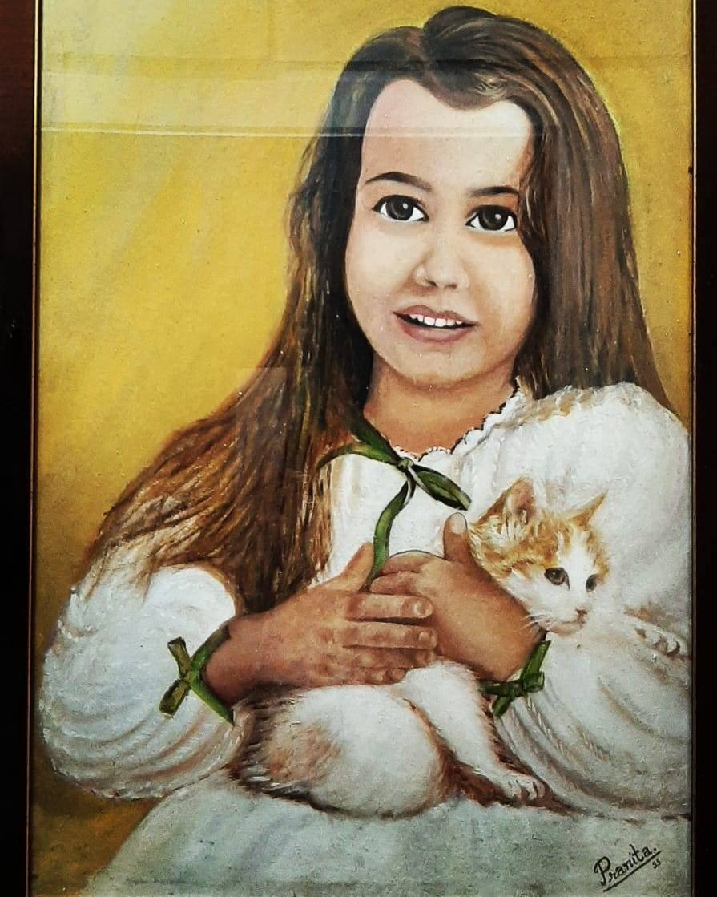
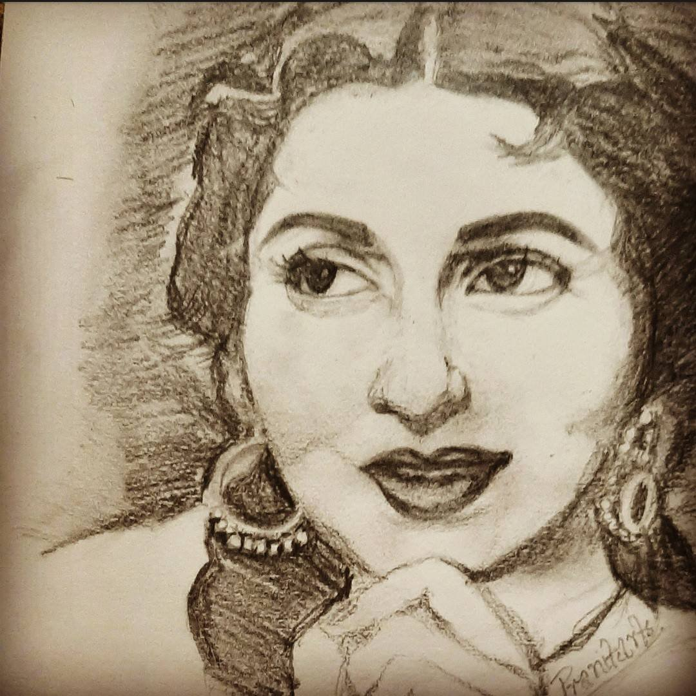
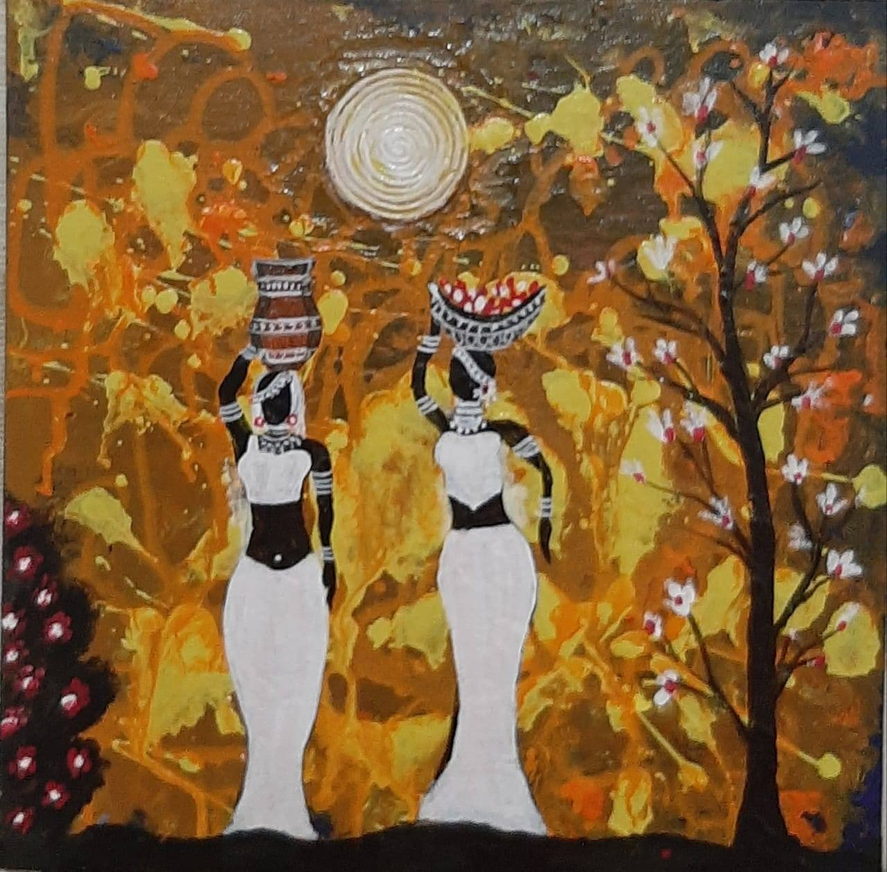
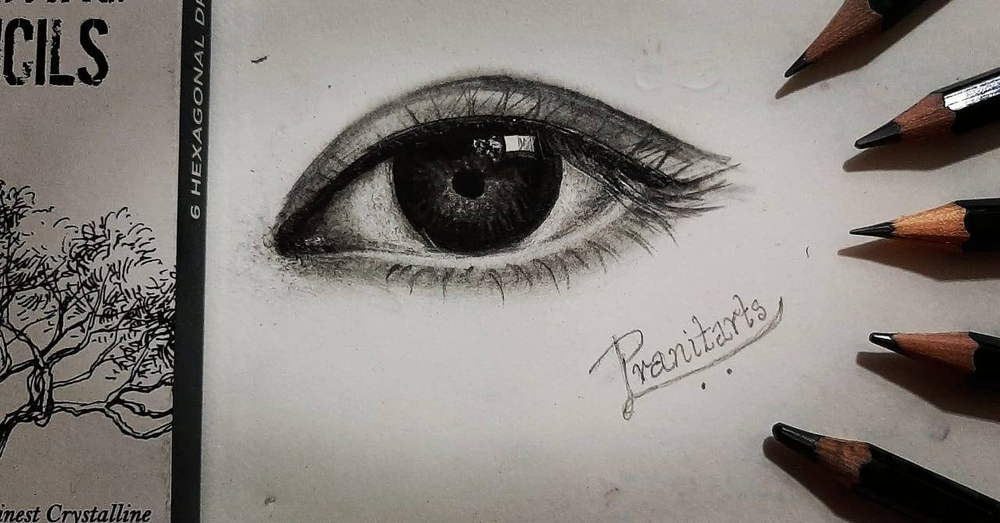

The more about well, me (Pranita Powale).
I was an Art enthusiasts since my school days. My Grandfather was an Artist and I
used to observe him regularly, this encouraged me and developed interest in Drawing.
I appeared for Intermediate Drawing Exam without any class and secured A grade during
my college days. Though I was a Commerce Graduate, my Passion for Art always inspired
me to make some beautiful Oil Paintings. As shown below, in the year 1995.

I got married in 1995 and got engrossed in becoming a perfect homemaker as
every woman does. But I always made the best use of my Art, in my kids Projects,
while teaching them diagrams and wherever possible. My elder daughter Nirmiti appeared
for Elementary & Intermediate Drawing Grade Exam, under my Guidance and secured 'A' Grade
in both the exams, it was there my confidence was built-up. After 3 year in 2014 my younger son
Advait was going to appear for Elementary Drawing Exam and 2 of his friends
came to learn Drawing, and ALL 3 of them secured 'A' Grade in Intermediate Drawing Exam.
This was the start of my Drawing Carrier and "CREATIVE MIND".
My passion for Art always kept me upgraded. Mural, Canvas Painting, Oil painting are
some of the techniques I learned on my own.
I want my students of CREATIVE MIND to excel in their knowledge of Art, and apply it
in different fields.
Art gives stability, increases imagination, makes you feel stress free, and gives satisfaction
of enjoying our own creativity.
Below are some of My Art Works:


